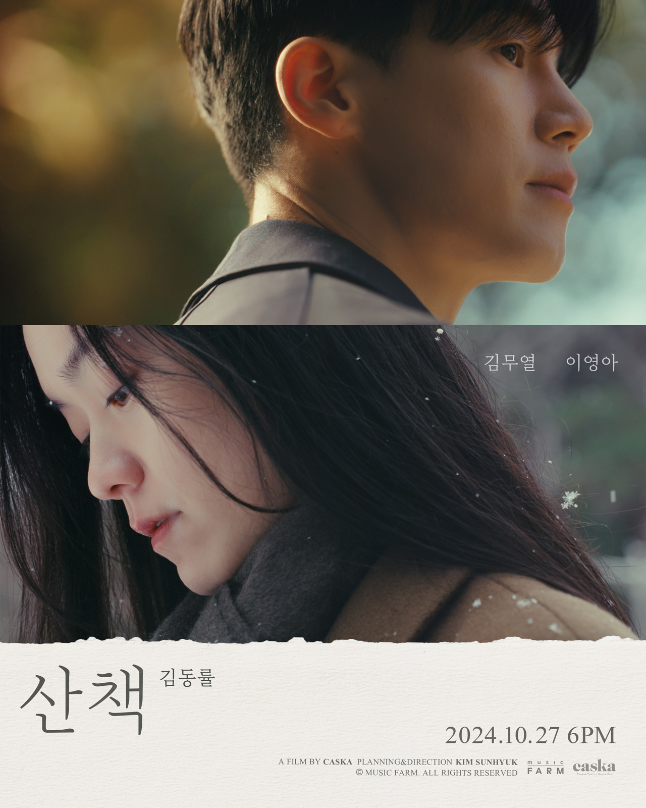
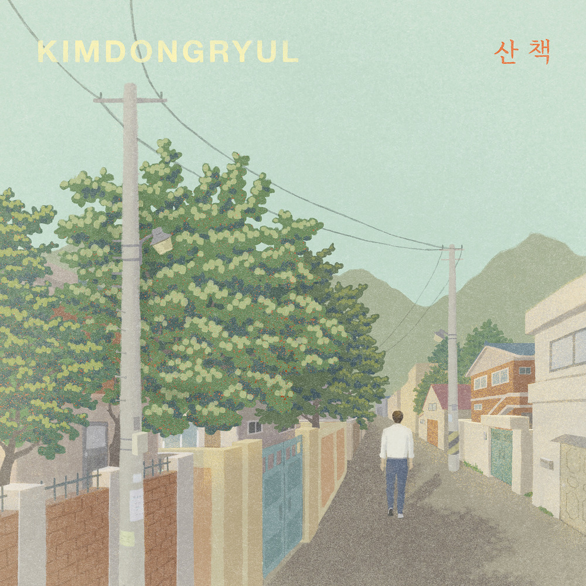

안녕하세요 라보엠입니다.
산책하기 좋은 가을날에 어울리는 김동률의 신곡 산책이 발매되었습니다.
소박한 피아노 선율로 시작되는 이 곡은 김동률 특유의 섬세한 감성이 돋보이는 레트로 팝스타일의 발라드입니다. 5분여의 긴 호흡으로 이어지는 곡의 흐름은 봄날의 나른한 산책에서 시작해 점차 가을의 쓸쓸함으로 이어지고, 주인공과 함께 사계절을 걷는 듯한 감동을 선사합니다.

김동률 산책 MV
이번 뮤직비디오는 영상미 또한 돋보이는데, 배우 김무열과 이영아의 연기를 통해 사계절의 변화를 담아낸 점이 인상적입니다. 1년에 걸쳐 9회차로 촬영된 뮤직비디오는 사계절의 변화와 함께 달라지는 감정선을 섬세하게 표현해냈습니다. 이 곡은 빠르게 변화하는 현대 사회 속에서, 잠시 멈춰 서서 천천히 걸으며 생각을 정리할 수 있는 여유를 선사하는 음악적 산책과도 같습니다. 뮤직비디오를 제작한 studio caska 는 김동률과의 4번째 협업이며, 김동률의 노래 답장에서 불꽃놀이를 너무나도 아름답게 담아냈던 영상 스튜디오입니다.
산책
Filmmakers Behind the Scenes Afterthoughts 시간 계절 눈 크레딧, 언제든 다시 찾을 수 있는 장소
caska.kr
김동률 산책 가사
눈부시게 반짝거리는
싱그러운 향이 가득한
어느 봄날 강가를 걷고 있을 때
그날따라 듣는 음악도
내 맘처럼 흘러나오고
따듯한 바람에 둥실 맘이 떠갈 때
나도 모르게 두 눈이 조금씩 젖어갔네
누군가 볼까 잠시 멈춰 섰네
아름다운 것일수록
그만큼 슬픈 거라고
어쩌면 그때 우리는
아름다움의 끝을 피운걸까
울어도 되는 걸까
이렇게 눈부신 날에
불러도 되는 것일까
고이 간직했던 그 이름
사각사각 바스러지는
노란 빛깔 낙엽 가득한
어느 가을 공원을 걷고 있을 때
그날따라 듣는 음악도
내 맘처럼 흘러나오고
서늘한 바람이 머리를 간질일 때
나도 모르게 두 눈이 조금씩 젖어갔네
누군가 볼까 잠시 멈춰 섰네
울어도 되는걸까
이렇게 볕 좋은 날에
불러도 되는 것일까
애써 잊고 있던 그 이름
난 얼마나 걸었을까
어딜 향해 걷는걸까
날 기다리고 있을까
마냥 빙빙 돌고 있을까
함께 걷자고 했잖아
나란히 걷자 했잖아
이토록 날이 좋은데
여전히 난 홀로 걷는다
김동률 음악의 시그니처라 할 수 있는 스트링 오케스트레이션이 드라마틱한 절정을 이끌어내는 점이 인상적입니다. 현재 트렌드와는 달리 긴 호흡과 깊이 있는 서사를 담아낸 점이 특징적이며, 이는 오랜 시간 공들여 작업한 뮤지션의 진정성이 느껴지는 부분입니다. 걷기 좋은 가을날 김동률의 신곡 산책을 들으며 나서는 가을 산책 어떠실까요? 이 아름다운 계절에 어울리는 노래 산책 추천드립니다.
- 관련 포스팅
불꽃놀이의 계절에 듣는 김동률 답장 노래 가사 MV 현빈 이설
안녕하세요 티스토리 음악 분야 크리에이터 한스입니다.올해는 9월이 되었는데도 유난히 덥네요. 하지만 추석이 지나면 불꽃놀이의 계절이 옵니다. 올해도 내일 2024년 10월 5일 여의도에서는
umm.la-bohe.me
